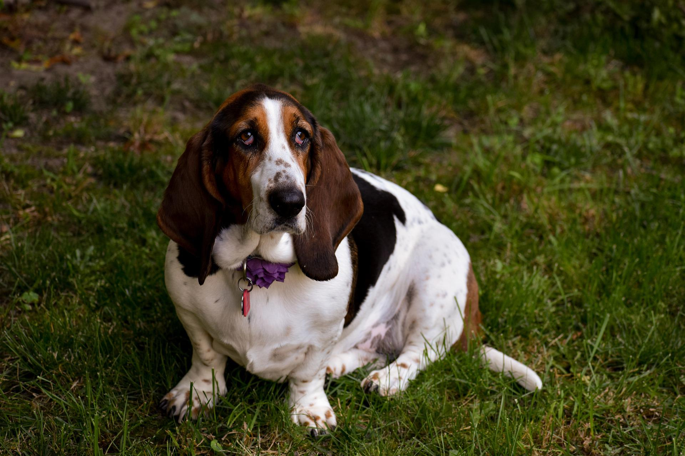

Bassets have a strong resemblance to larger, longer-legged hound breeds, particularly the Bloodhound, despite their much smaller stature.[1] Bassets forelegs tend to be either crooked or straight, depending upon the breed; the coat types and colours seen within different basset breeds reflect those seen within the broader scenthound type, with short, long and wiry coats all found.
